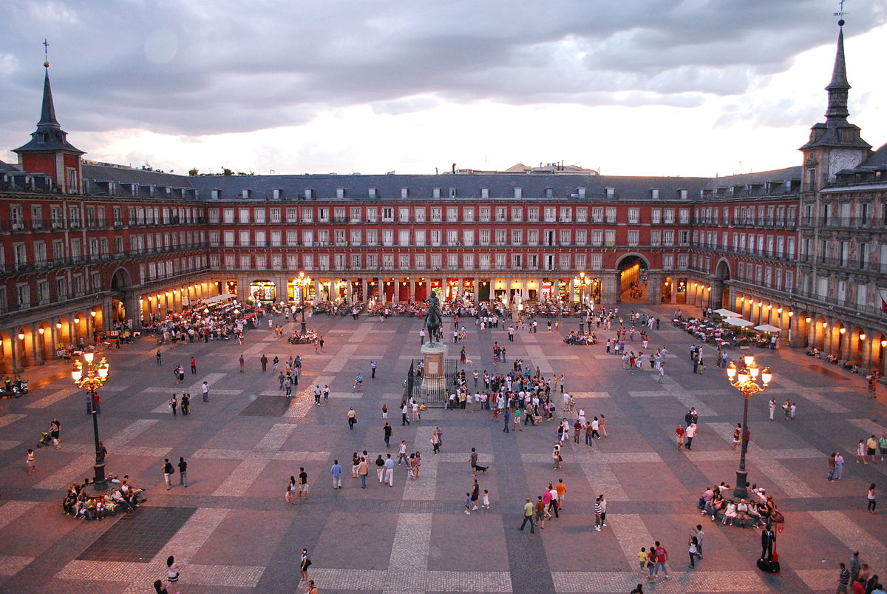

Madrid es un municipio y una ciudad de España.
La localidad, con categoría histórica de villa,
es la capital del Estado y de la Comunidad de Madrid.
En su término municipal, el más poblado de España, viven
3.334.730 personas empadronadas, según el INE de 2020.
El área metropolitana asociada tiene una población de 6.779.888 habitantes,
la segunda de la Unión Europea, según la fuente, tras la de París,
y en otras fuentes detrás también de la Región del Ruhr,
así como la segunda ciudad más poblada de la Unión Europea,
por detrás de Berlín.
El Museo Nacional del Prado es uno de los más importantes del mundo, así como uno de los más visitados (el decimoctavo en 2013 entre los museos de arte), y está considerada la institución cultural más importante de España, según el Observatorio de la Cultura de 2020.
Horarios:
Lunes a Sábados de 10:00 a 20:00
Domingos de 10:00 a 19:00
Entrada general: 20 euros
El Museo Nacional Centro de Arte Reina Sofía (MNCARS), conocido comúnmente como Museo Reina Sofía, es un museo español de arte del siglo XX y contemporáneo, con sede en la ciudad de Madrid.
El Reina Sofía es el vértice sur del conocido como Triángulo del Arte de Madrid, que incluye a otros dos célebres museos: el Prado y el Thyssen-Bornemisza.
Horarios:
Lunes a Sábados de 10:00 a 20:00
Domingos de 10:00 a 14:30
Entrada general: 10 euros

La plaza Mayor está situada en el centro de Madrid, en el barrio de Sol, junto a la calle Mayor y a 300 metros de la Puerta del Sol.
Se trata de una plaza porticada de planta rectangular, de 129 metros de largo por 94 metros de ancho, que está completamente cerrada por edificios de viviendas de tres plantas, con 237 balcones en total que dan a la plaza.
Entrada libre y gratuita
Barcelona es una ciudad española, capital de la comunidad
autónoma de Cataluña, de la provincia homónima y de la comarca
del Barcelonés.
Se ubica a la orilla del mar Mediterráneo, a unos 120 km al sur de la
cadena montañosa de los Pirineos y de la frontera con Francia, en un
pequeño llano litoral limitado por el mar al este, la sierra de Collserola
al oeste, el río Llobregat al sur y el río Besós al norte.
El Templo Expiatorio de la Sagrada Familia, conocido simplemente
Sagrada Familia, es una basílica católica de Barcelona, diseñada por
el arquitecto Antoni Gaudí. Iniciada en 1882, todavía está en construcción.
Es la obra maestra de Gaudí, y el máximo exponente de la arquitectura modernista
catalana.
Horarios:
Todos los días de 09:00 a 20:00
Entrada general: 26 euros
Visita guiada: 27 euros
El Fútbol Club Barceona (F.C Barcelona) fue fundado como club
de fútbol el 29 de noviembre de 1899 y registrado oficialmente
el 5 de enero de 1903.
Es el club español más laureado, a nivel nacional domina el
palmarés con setenta y cuatro campeonatos, entre 26 Ligas de España,
31 Copas del Rey, 2 Copas de la Liga, 13 Supercopas de España y 3 Copas
Eva Duarte. Y a nivel internacional ostenta 22 trofeos, situado en el segundo
puesto europeo con 3 Copas Mundiales de Clubes, 5 Ligas de Campeones, 4 Recopas
de la UEFA, 5 Supercopas de la UEFA, 2 Copas Latinas y 3 Copas de Ferias.
Horarios:
Todos los días de 10:00 a 19:00
Entrada general: 29.50 euros
Entrada menores de edad: 22 euros

El Mercado de San José, popularmente conocido como La Boquería, es un mercado municipal que se encuentra en la Rambla de Barcelona. Además de ser un lugar donde se puede comprar todo tipo de productos frescos, es también una atracción turística.
Es el mercado más grande de Cataluña, el más variado en oferta alimentaria y también el más visitado por los turistas.
Horarios: Lunes a Sábados de 08:00 a 20:30
Entrada: Libre y gratuita